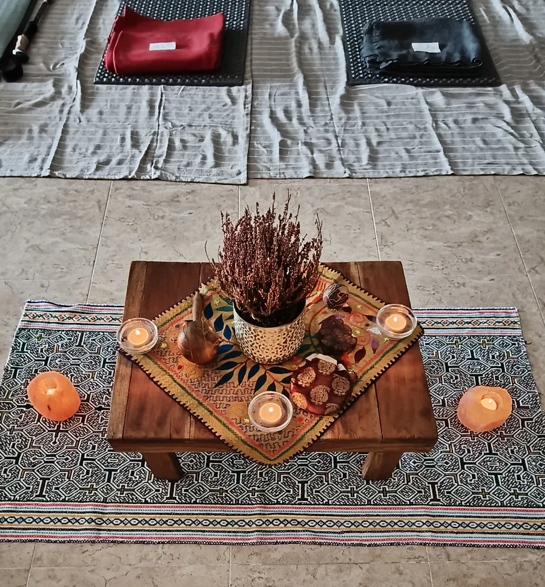

Preparation, support and integration
Medicinal plant processes are personalised therapeutic processes within a group setting. Each participant receives individual preparation according to their purpose, together with physical and lifestyle guidelines.
Great care is taken to support each person at every step, until a month after the session, so that the therapeutic process is not left half done and can truly bring clarity.
Twice a month, in Barcelona and in Tarragona
We facilitate medicinal plant processes twice a month: once in Barcelona and once in Tarragona.
If you feel this guidance may be for you, get in touch with us. We will explain how the preparation works and let you know the next dates.
Preparation beforehand
Individual, according to each person's intention.
Safe spaces
Protected and run with professionalism.
Never alone
So that you feel comfortable and heard.
Integration
Support for up to a month afterwards.
Sober moments of sacredness, through the music, the team's attitude and the setting, with balance and never losing sight of the therapeutic purpose.
Would you like to know whether this guidance is for you? Write to us and we'll talk it through.
These processes do not replace any medical or psychological treatment. Taking part requires a prior interview and assessment.